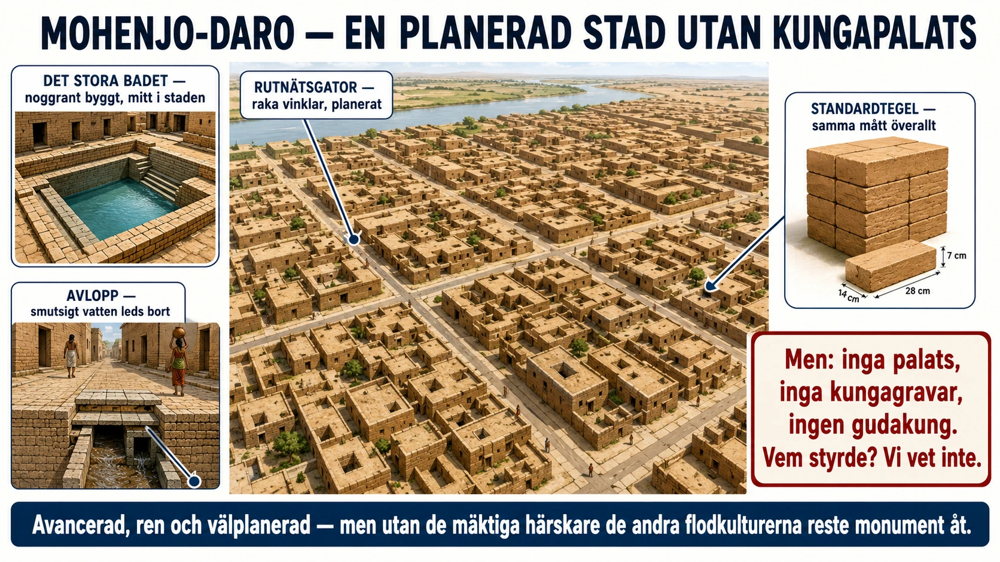

Av de fyra flodkulturerna är en märkligt tyst. Vi vet en hel del om Egypten och Mesopotamien — deras kungar, gudar, krig och lagar — eftersom de lämnade efter sig texter vi kan läsa. Men Induskulturen, vid Indusfloden i dagens Pakistan, har lämnat oss en gåta.

Vad vi vet. Induskulturen byggde några av forntidens mest imponerande städer, framför allt Mohenjo-Daro och Harappa. Och det som slår en är hur planerade de var. Gatorna gick i räta vinklar, som ett rutnät. Husen byggdes av tegel i standardstorlekar — samma mått över hela det stora området, som om någon bestämt en gemensam norm. Städerna hade brunnar, badrum och kanske världens första riktiga avloppssystem, med rör och rännor som ledde bort smutsigt vatten från husen. Mitt i Mohenjo-Daro fanns ett stort, noggrant byggt bad. Här bodde tiotusentals människor i ordnade, rena städer för över 4 000 år sedan.
Vad vi inte vet. Och ändå — vi vet inte namnet på en enda av deras kungar. Vi vet inte vilka gudar de dyrkade, hur de styrdes, eller vad de kallade sig själva. Varför? Därför att de hade en skrift, men ingen har lyckats tyda den. Vi har hittat deras korta tecken på små sigill och föremål, men ingen kan läsa dem. Utan läsbara texter är kulturen som en film utan ljud: vi ser vad de gjorde, men hör aldrig vad de sa.
Den verkliga gåtan. Men det finns något ännu mer överraskande, och det handlar inte bara om skriften. I Egypten och Mesopotamien pekar allt mot mäktiga härskare: väldiga kungagravar, palats, statyer av kungar, tempel som reser sig över staden. Vid Indus hittar arkeologerna nästan ingenting av det slaget. Inga praktfulla kungagravar. Inga tydliga palats. Ingen jättestaty av en härskare. En hel högkultur, med avancerade städer och långväga handel, tycks ha klarat sig utan de skrytsamma tecknen på envåldshärskare. Kanske styrdes den av präster, kanske av rådsförsamlingar, kanske på ett sätt vi ännu inte förstår. Det påminner om något: överskott och stora städer måste inte leda till kungar och palats. Indus är kanske det tydligaste exemplet i hela forntiden.
Varför vet vi olika mycket? Induskulturens gåta lär oss också något viktigt om historia i allmänhet: vi vet inte lika mycket om allt förflutet. Det beror inte på att en kultur var "mindre viktig", utan på vad som råkat bevaras och vad vi kan tolka. En kultur som skrev på hållbart material vi kan läsa träder fram i ljuset; en som lämnade tecken vi inte kan tyda blir tyst för oss — hur avancerad den än var. Att fråga varför vet vi det här, men inte det där? är en av historikerns allra viktigaste frågor.
Induskulturen tynade så småningom bort, kanske för att floden ändrade lopp eller för att klimatet förändrades — ännu en gåta som forskarna fortfarande försöker lösa. Kvar står deras tysta, välplanerade städer och påminner oss om att det förflutna alltid är större än det vi kan läsa.